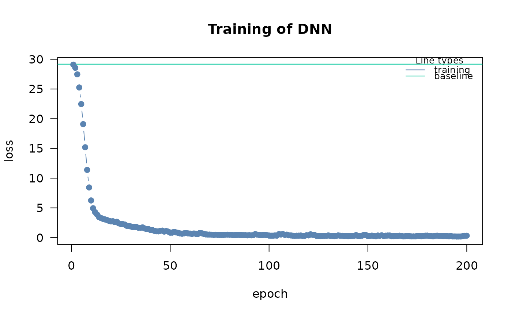
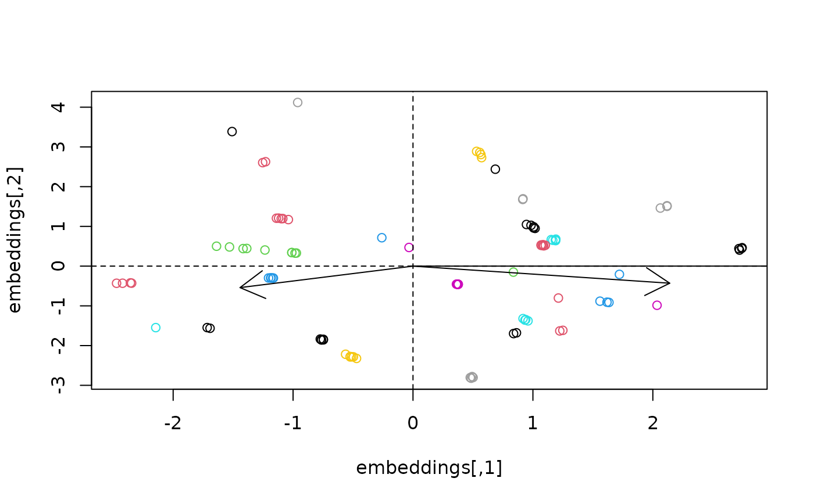

Can be used to create an embedding structure for categorical variables in the function interface
Details
The e() structure must be used in the function interface. Although not document in the function signature, the first argument to the e() structure is the categorical variable that codes a group in the data, as in
predictors + e(group, ...)
For more details, see the example below
Examples
# \donttest{
if(torch::torch_is_installed()){
# The following example shows that groups with similar responses will cluster in embedding space
set.seed(123)
n = 10000 # observations
m = 100 # groups / individuals
k = 10 # cluster of groups with the same behavior
dat = data.frame(f1 = runif(n),
f2 = runif(n),
f3 = runif(n),
ind = factor(rep(1:m, each = n/m)),
cluster = rep(1:k, each = n/k),
response = NA)
slopes = matrix(runif(3*k, min = -10,max = 10), nrow = k, ncol = 3)
for(i in 1:k) dat$response[dat$cluster == i] =
as.matrix(dat[dat$cluster == i, 1:3]) %*% slopes[i,] + rnorm(n/k, sd = 0.2)
mod <- dnn(response~f1+f2+f3 + e(ind,dim = 2),
data = dat, epochs = 200L, optimizer = config_optimizer("adam"))
embeddings = coef(mod)[[1]][[1]] # extract embeddings
plot(embeddings, col = c(rep(1:k, each = m/k))) # plot clusters in embedding space
abline(h = 0, lty = 2)
abline(v = 0, lty = 2)
ace = conditionalEffects(mod) # extract conditional effects
# now average conditional effects per cluster
ind_ace =
sapply(1:m, function(ind) {
tmp = ace[[1]]$result[dat$ind==ind,,]
return(diag(apply(tmp, 2:3, mean)))
})
# to create biplot, multiply beta of each cluster with coordinates
coord = ind_ace %*% embeddings/m
arrows(x0 = rep(0, 3), x1 = coord[,1], y0 = rep(0,3), y1 =coord[,2])
}
#> Loss at epoch 1: 29.099754, lr: 0.01000

#> Loss at epoch 2: 28.561088, lr: 0.01000
#> Loss at epoch 3: 27.460882, lr: 0.01000
#> Loss at epoch 4: 25.255809, lr: 0.01000
#> Loss at epoch 5: 22.460190, lr: 0.01000
#> Loss at epoch 6: 19.086096, lr: 0.01000
#> Loss at epoch 7: 15.192637, lr: 0.01000
#> Loss at epoch 8: 11.389973, lr: 0.01000
#> Loss at epoch 9: 8.434042, lr: 0.01000
#> Loss at epoch 10: 6.248270, lr: 0.01000
#> Loss at epoch 11: 4.938750, lr: 0.01000
#> Loss at epoch 12: 4.278995, lr: 0.01000
#> Loss at epoch 13: 3.885242, lr: 0.01000
#> Loss at epoch 14: 3.452789, lr: 0.01000
#> Loss at epoch 15: 3.291672, lr: 0.01000
#> Loss at epoch 16: 3.158984, lr: 0.01000
#> Loss at epoch 17: 3.061495, lr: 0.01000
#> Loss at epoch 18: 2.963641, lr: 0.01000
#> Loss at epoch 19: 2.832837, lr: 0.01000
#> Loss at epoch 20: 2.730249, lr: 0.01000
#> Loss at epoch 21: 2.748456, lr: 0.01000
#> Loss at epoch 22: 2.603724, lr: 0.01000
#> Loss at epoch 23: 2.660133, lr: 0.01000
#> Loss at epoch 24: 2.401411, lr: 0.01000
#> Loss at epoch 25: 2.300233, lr: 0.01000
#> Loss at epoch 26: 2.264518, lr: 0.01000
#> Loss at epoch 27: 2.194154, lr: 0.01000
#> Loss at epoch 28: 1.995936, lr: 0.01000
#> Loss at epoch 29: 1.965311, lr: 0.01000
#> Loss at epoch 30: 1.878370, lr: 0.01000
#> Loss at epoch 31: 1.783158, lr: 0.01000
#> Loss at epoch 32: 1.810020, lr: 0.01000
#> Loss at epoch 33: 1.775184, lr: 0.01000
#> Loss at epoch 34: 1.652295, lr: 0.01000
#> Loss at epoch 35: 1.648601, lr: 0.01000
#> Loss at epoch 36: 1.714876, lr: 0.01000
#> Loss at epoch 37: 1.540436, lr: 0.01000
#> Loss at epoch 38: 1.452182, lr: 0.01000
#> Loss at epoch 39: 1.430807, lr: 0.01000
#> Loss at epoch 40: 1.293817, lr: 0.01000
#> Loss at epoch 41: 1.283825, lr: 0.01000
#> Loss at epoch 42: 1.140282, lr: 0.01000
#> Loss at epoch 43: 1.058118, lr: 0.01000
#> Loss at epoch 44: 1.048211, lr: 0.01000
#> Loss at epoch 45: 1.141246, lr: 0.01000
#> Loss at epoch 46: 1.180983, lr: 0.01000
#> Loss at epoch 47: 1.016584, lr: 0.01000
#> Loss at epoch 48: 1.094959, lr: 0.01000
#> Loss at epoch 49: 1.011539, lr: 0.01000
#> Loss at epoch 50: 0.837889, lr: 0.01000
#> Loss at epoch 51: 0.838168, lr: 0.01000
#> Loss at epoch 52: 0.980076, lr: 0.01000
#> Loss at epoch 53: 0.868605, lr: 0.01000
#> Loss at epoch 54: 0.807643, lr: 0.01000
#> Loss at epoch 55: 0.697864, lr: 0.01000
#> Loss at epoch 56: 0.658286, lr: 0.01000
#> Loss at epoch 57: 0.717697, lr: 0.01000
#> Loss at epoch 58: 0.777086, lr: 0.01000
#> Loss at epoch 59: 0.705132, lr: 0.01000
#> Loss at epoch 60: 0.683228, lr: 0.01000
#> Loss at epoch 61: 0.616483, lr: 0.01000
#> Loss at epoch 62: 0.691426, lr: 0.01000
#> Loss at epoch 63: 0.636856, lr: 0.01000
#> Loss at epoch 64: 0.613274, lr: 0.01000
#> Loss at epoch 65: 0.796949, lr: 0.01000
#> Loss at epoch 66: 0.723294, lr: 0.01000
#> Loss at epoch 67: 0.629183, lr: 0.01000
#> Loss at epoch 68: 0.544138, lr: 0.01000
#> Loss at epoch 69: 0.512655, lr: 0.01000
#> Loss at epoch 70: 0.510736, lr: 0.01000
#> Loss at epoch 71: 0.494949, lr: 0.01000
#> Loss at epoch 72: 0.457297, lr: 0.01000
#> Loss at epoch 73: 0.493575, lr: 0.01000
#> Loss at epoch 74: 0.462147, lr: 0.01000
#> Loss at epoch 75: 0.459025, lr: 0.01000
#> Loss at epoch 76: 0.456307, lr: 0.01000
#> Loss at epoch 77: 0.453898, lr: 0.01000
#> Loss at epoch 78: 0.488470, lr: 0.01000
#> Loss at epoch 79: 0.496063, lr: 0.01000
#> Loss at epoch 80: 0.479454, lr: 0.01000
#> Loss at epoch 81: 0.475256, lr: 0.01000
#> Loss at epoch 82: 0.404211, lr: 0.01000
#> Loss at epoch 83: 0.441266, lr: 0.01000
#> Loss at epoch 84: 0.465309, lr: 0.01000
#> Loss at epoch 85: 0.461515, lr: 0.01000
#> Loss at epoch 86: 0.437844, lr: 0.01000
#> Loss at epoch 87: 0.408499, lr: 0.01000
#> Loss at epoch 88: 0.417058, lr: 0.01000
#> Loss at epoch 89: 0.378622, lr: 0.01000
#> Loss at epoch 90: 0.407277, lr: 0.01000
#> Loss at epoch 91: 0.380754, lr: 0.01000
#> Loss at epoch 92: 0.413812, lr: 0.01000
#> Loss at epoch 93: 0.583417, lr: 0.01000
#> Loss at epoch 94: 0.500653, lr: 0.01000
#> Loss at epoch 95: 0.458463, lr: 0.01000
#> Loss at epoch 96: 0.406576, lr: 0.01000
#> Loss at epoch 97: 0.458035, lr: 0.01000
#> Loss at epoch 98: 0.464755, lr: 0.01000
#> Loss at epoch 99: 0.400585, lr: 0.01000
#> Loss at epoch 100: 0.344418, lr: 0.01000
#> Loss at epoch 101: 0.324665, lr: 0.01000
#> Loss at epoch 102: 0.326700, lr: 0.01000
#> Loss at epoch 103: 0.359746, lr: 0.01000
#> Loss at epoch 104: 0.335873, lr: 0.01000
#> Loss at epoch 105: 0.582366, lr: 0.01000
#> Loss at epoch 106: 0.522986, lr: 0.01000
#> Loss at epoch 107: 0.591070, lr: 0.01000
#> Loss at epoch 108: 0.460915, lr: 0.01000
#> Loss at epoch 109: 0.505672, lr: 0.01000
#> Loss at epoch 110: 0.381195, lr: 0.01000
#> Loss at epoch 111: 0.368061, lr: 0.01000
#> Loss at epoch 112: 0.322425, lr: 0.01000
#> Loss at epoch 113: 0.302224, lr: 0.01000
#> Loss at epoch 114: 0.323610, lr: 0.01000
#> Loss at epoch 115: 0.325774, lr: 0.01000
#> Loss at epoch 116: 0.350470, lr: 0.01000
#> Loss at epoch 117: 0.298353, lr: 0.01000
#> Loss at epoch 118: 0.297376, lr: 0.01000
#> Loss at epoch 119: 0.398427, lr: 0.01000
#> Loss at epoch 120: 0.373536, lr: 0.01000
#> Loss at epoch 121: 0.547824, lr: 0.01000
#> Loss at epoch 122: 0.476181, lr: 0.01000
#> Loss at epoch 123: 0.444008, lr: 0.01000
#> Loss at epoch 124: 0.298044, lr: 0.01000
#> Loss at epoch 125: 0.278304, lr: 0.01000
#> Loss at epoch 126: 0.261376, lr: 0.01000
#> Loss at epoch 127: 0.278095, lr: 0.01000
#> Loss at epoch 128: 0.291308, lr: 0.01000
#> Loss at epoch 129: 0.303583, lr: 0.01000
#> Loss at epoch 130: 0.363549, lr: 0.01000
#> Loss at epoch 131: 0.292565, lr: 0.01000
#> Loss at epoch 132: 0.288195, lr: 0.01000
#> Loss at epoch 133: 0.254177, lr: 0.01000
#> Loss at epoch 134: 0.300902, lr: 0.01000
#> Loss at epoch 135: 0.372759, lr: 0.01000
#> Loss at epoch 136: 0.318274, lr: 0.01000
#> Loss at epoch 137: 0.313239, lr: 0.01000
#> Loss at epoch 138: 0.268893, lr: 0.01000
#> Loss at epoch 139: 0.286247, lr: 0.01000
#> Loss at epoch 140: 0.248549, lr: 0.01000
#> Loss at epoch 141: 0.261681, lr: 0.01000
#> Loss at epoch 142: 0.294669, lr: 0.01000
#> Loss at epoch 143: 0.302649, lr: 0.01000
#> Loss at epoch 144: 0.413566, lr: 0.01000
#> Loss at epoch 145: 0.277784, lr: 0.01000
#> Loss at epoch 146: 0.273847, lr: 0.01000
#> Loss at epoch 147: 0.324755, lr: 0.01000
#> Loss at epoch 148: 0.459835, lr: 0.01000
#> Loss at epoch 149: 0.421274, lr: 0.01000
#> Loss at epoch 150: 0.263058, lr: 0.01000
#> Loss at epoch 151: 0.286625, lr: 0.01000
#> Loss at epoch 152: 0.329183, lr: 0.01000
#> Loss at epoch 153: 0.260207, lr: 0.01000
#> Loss at epoch 154: 0.228327, lr: 0.01000
#> Loss at epoch 155: 0.349312, lr: 0.01000
#> Loss at epoch 156: 0.306611, lr: 0.01000
#> Loss at epoch 157: 0.384383, lr: 0.01000
#> Loss at epoch 158: 0.273470, lr: 0.01000
#> Loss at epoch 159: 0.322797, lr: 0.01000
#> Loss at epoch 160: 0.351023, lr: 0.01000
#> Loss at epoch 161: 0.350388, lr: 0.01000
#> Loss at epoch 162: 0.248091, lr: 0.01000
#> Loss at epoch 163: 0.251455, lr: 0.01000
#> Loss at epoch 164: 0.281702, lr: 0.01000
#> Loss at epoch 165: 0.265927, lr: 0.01000
#> Loss at epoch 166: 0.321094, lr: 0.01000
#> Loss at epoch 167: 0.286049, lr: 0.01000
#> Loss at epoch 168: 0.203091, lr: 0.01000
#> Loss at epoch 169: 0.244295, lr: 0.01000
#> Loss at epoch 170: 0.263226, lr: 0.01000
#> Loss at epoch 171: 0.249276, lr: 0.01000
#> Loss at epoch 172: 0.201692, lr: 0.01000
#> Loss at epoch 173: 0.206342, lr: 0.01000
#> Loss at epoch 174: 0.202648, lr: 0.01000
#> Loss at epoch 175: 0.304146, lr: 0.01000
#> Loss at epoch 176: 0.267742, lr: 0.01000
#> Loss at epoch 177: 0.237298, lr: 0.01000
#> Loss at epoch 178: 0.265123, lr: 0.01000
#> Loss at epoch 179: 0.324812, lr: 0.01000
#> Loss at epoch 180: 0.333090, lr: 0.01000
#> Loss at epoch 181: 0.290800, lr: 0.01000
#> Loss at epoch 182: 0.254967, lr: 0.01000
#> Loss at epoch 183: 0.220298, lr: 0.01000
#> Loss at epoch 184: 0.310102, lr: 0.01000
#> Loss at epoch 185: 0.323893, lr: 0.01000
#> Loss at epoch 186: 0.287835, lr: 0.01000
#> Loss at epoch 187: 0.289046, lr: 0.01000
#> Loss at epoch 188: 0.257147, lr: 0.01000
#> Loss at epoch 189: 0.281548, lr: 0.01000
#> Loss at epoch 190: 0.253245, lr: 0.01000
#> Loss at epoch 191: 0.223052, lr: 0.01000
#> Loss at epoch 192: 0.274453, lr: 0.01000
#> Loss at epoch 193: 0.193660, lr: 0.01000
#> Loss at epoch 194: 0.196718, lr: 0.01000
#> Loss at epoch 195: 0.182455, lr: 0.01000
#> Loss at epoch 196: 0.187786, lr: 0.01000
#> Loss at epoch 197: 0.189554, lr: 0.01000
#> Loss at epoch 198: 0.254347, lr: 0.01000
#> Loss at epoch 199: 0.311851, lr: 0.01000
#> Loss at epoch 200: 0.323367, lr: 0.01000
#> Conditional effects calculated on 5000 of 10000 observations. Use dnn(ce = <number of rows>) to change this.

# }